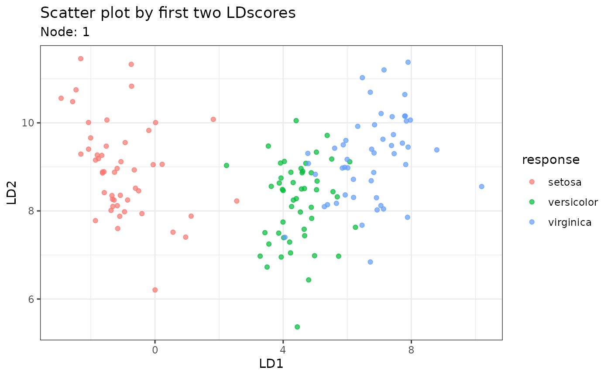

LDATree is an R modeling package for fitting
classification trees. If you are unfamiliar with classification trees,
here is a tutorial
about the traditional CART and its R implementation
rpart.
Compared to other similar trees, LDATree sets itself
apart in the following ways:
It applies the idea of LDA (Linear Discriminant Analysis) when selecting variables, finding splits, and fitting models in terminal nodes.
It addresses certain limitations of the R implementation of LDA (
MASS::lda), such as handling missing values, dealing with more features than samples, and constant values within groups.Re-implement LDA using the Generalized Singular Value Decomposition (GSVD), LDATree offers quick response, particularly with large datasets.
The package also includes several visualization tools to provide deeper insights into the data.
Build the Tree
Currently, LDATree offers two methods to construct a
tree:
The first method utilizes a direct-stopping rule, halting the growth process once specific conditions are satisfied.
The second approach involves pruning: it permits the building of a larger tree, which is then pruned using cross-validation.
Plot the Tree
LDATree offers two plotting methods：
You can use
plotdirectly to view the full tree diagram.To check the individual plot for the node that you are interested in, you have to input the (training) data and specify the node index.
Overall Plot
# View the overall tree
plot(fit) # Tips: Try clicking on the nodes...Individual Plots
# Three types of individual plots
# 1. Scatter plot on first two LD scores
plot(fit, data = iris, node = 1)
# 2. Density plot on the first LD score
plot(fit, data = iris, node = 3)
#> Warning: Groups with fewer than two data points have been dropped.
#> Warning in max(ids, na.rm = TRUE): no non-missing arguments to max; returning
#> -Inf
# 3. A message
plot(fit, data = iris, node = 5)
#> [1] "Every observation in this node is predicted to be virginica"Make Predictions
# Prediction only
predictions <- predict(fit, iris)
head(predictions)
#> [1] "setosa" "setosa" "setosa" "setosa" "setosa" "setosa"
# A more informative prediction
predictions <- predict(fit, iris, type = "all")
head(predictions)
#> response node setosa versicolor virginica
#> 1 setosa 7 1 1.346467e-26 5.470122e-41
#> 2 setosa 7 1 3.044310e-22 3.780883e-36
#> 3 setosa 7 1 1.602581e-24 7.965832e-39
#> 4 setosa 7 1 2.066476e-21 1.495780e-34
#> 5 setosa 7 1 3.323135e-27 1.520898e-41
#> 6 setosa 7 1 1.957386e-24 2.347768e-38Missing Values
For missing values, you do not need to specify anything (unless you
want to); LDATree will handle it. By default, it fills in
missing numerical variables with their mean and adds a missing flag. For
missing factor variables, it assigns a new level. For more options,
please refer to help(Treee).
#
irisMissing <- iris
for(i in 1:4) irisMissing[sample(150,20),i] <- NA
fitMissing <- Treee(Species~., data = irisMissing)
plot(fitMissing, data = irisMissing, node = 1)
LDA/GSVD
As we re-implement the LDA/GSVD and apply it in the model fitting, a
by-product is the ldaGSVD function. Feel free to play with
it and see how it compares to MASS::lda.